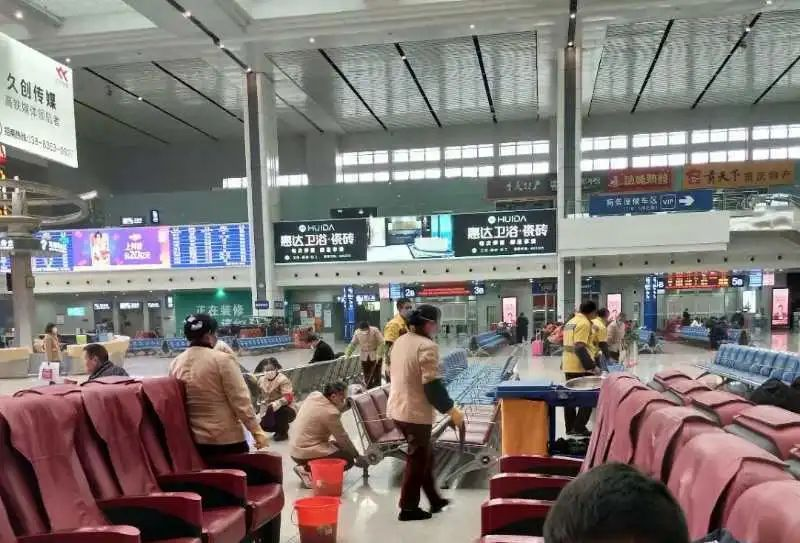
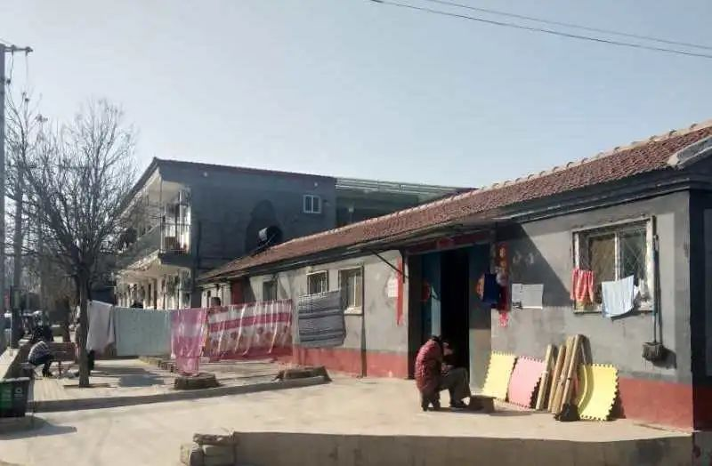
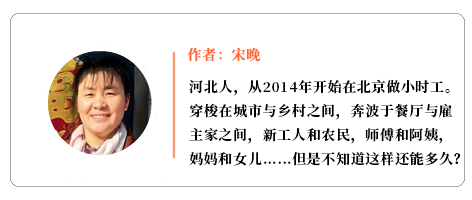

被BBC报道，这位武汉独居者连续写了44天封城日记
原文链接 备份链接 1月23日凌晨2点的一纸封城令，让留在这个城市的900万人，不得不承受封城的集体共命。处境和遭遇的不同，让同一片封城的天空下，生发出千万种不同的生活。 当大多数武汉人以家庭为单位防御新冠的时候，还有一些少数派，以异乡者 …

最后一段怎么写，是写作班出现的最常见问题。这篇文章的最后一段，是宋晚最后决定加上的，她还发给我发了太阳下山后晚霞的照片。这种“乐观”对宋晚还有很多家政工姐妹来说，都是一个极为重要和核心的词，同时，这也是她们希望写作达到的心态。我作为指导老师和编辑，保留了不少原文里的乐观时刻和向上精神（强烈建议参照文中糕点配图！！！）。不过，我知道很多作者是因为悲观才成为作者的，所以最终，乐观和写作有什么样的关系，写作和阶层有什么样的关系，我们还真的可以多想一想。
——写作指导/特约编辑：静远
1月20号，我还在一家酒店干小时工。下班开例会时，领导说：要注意保持各部门卫生和个人卫生，武汉有许多人不明原因生病。当时我并不知道说的就是新冠状病毒肺炎，以为就是普通感染或者食物中毒。当天晚上去另一个饭店干小时工也没有戴口罩，而且公交车上和大街上戴口罩的人也寥寥无几。到22号，上面再次开会说武汉情况较严重，要求大家之后上班每人领一个口罩带上，而且必须做好卫生消毒等工作。
我早已买好23号回重庆的火车票，急切地等着回家的日子。这么多年，我一直在北京做小时工，我老公老李在一家幼儿园当保安，女儿萌萌在京读研，儿子涵涵在涿州二中上高二。我们一家四口每年都盼着春节可以回家。为了作好路途上的基本安全防护，我连续跑了三个药房，花30元终于买到5个口罩。
23号下午，我们一家四个人坐地铁来到北京西站，看到所有人全都戴上了各种各样的口罩。北京西至重庆北的列车通常是路过汉口的，而且也会停上半小时。而那天列车缓缓开动后，嗽叭则开始广播。大概意思是让在汉口下的旅客转乘别的列车，此次列车在汉口站不停车。或许那时的我们对武汉疫情不是真正了解，这一路乘客也没有那么恐惧，人们仍然相互间有些亲密感，路途上互相照顾。
（本文照片均由作者提供）
高兴地回到家，和年迈的父母一起，全家人团团圆圆过除夕，看春晚，走亲访友……结果刚开心地过完初一，就从新闻中听说武汉封城了，是新型冠状病毒肺炎传染严重导致的。一下子，空气中充斥着闻虎色变般的恐惧不安。
从此我每天都跟踪着看百度的“全国疫情动态”中确诊病例、疑似病例、治愈病例、死亡病例的数据变化。其中，确诊病例仍然在猛烈增长，而治愈病例变化微妙。网上看到全国各省市都采取封闭式的方法来控制疫情的发展，各门店、厂矿、饭店、酒店都停业。媒体上还相继出现许多抗疫情的流行语：“睡觉为国家做贡献”、“不出门不添乱”、“宅家就是好公民”等等。出门的人，就如同那句谚语——“过街老鼠——人人喊打”。
本打算春节回老家和父母过完团圆年，再和亲朋好友相聚，初八回京上班。接着老李和我都得到通知：受到疫情影响，推迟上班一周。于是为了在家多些日子陪伴父母，我决定改签了火车票等，疫情稍减再回去。可是，越等越严重，眼看最后唯一一片净土的西藏也失守了。后来为了更好控制疫情，中央下发指令：外出返乡人员，必须居家自行隔离14天，身体健康才能正常出入。为了早日解除隔离上班，2月9号，我们坐车来到重庆北站，准备回北京。
一路上，我们看到公路上车辆稀少，昔日拥挤热闹的重庆北站变得冷清，有几位保洁工人辛苦细致地给整个侯车厅的全部坐椅地面消毒、擦扫。登上列车后，醒目的一行字就映入眼帘：“本次列车已消毒”。车上每两人之间保持1.5米的座位距离，穿防护工作服的列车员给乘客测体温，审查信息登记，列车广播宣传如何防控病毒……为消除疫情带来的焦虑和压抑，我掏出扑克，一家四口玩起“黑A红A找朋友”的游戏。打着打着，顺利到达北京西站。

就这样，一家四口人，带着行囊，来到三家店村的东门大门口外。看到保安在给每个进村人员测量体温。在查询基本信息，登记核实完后，我们终于回到自租房―——我的第二个家。之后，我们也和许多返京人员一样遵守规定，居家隔离。
由于租房面积小，一共六七平米，住四口人，实在太狭小，所以我们打算再租一间房，等疫情过后孩子们开学了就退房。可是问了一圈后，得到的反馈要么是村里刚开完会不让出租房屋，要么是要求有暂住证、居住卡或者社保卡。幸好遇到一位通融的房东，说没有这些卡也可以。正想松一口气，谁知道他继续说道：“但是你要一次性交付三个月房租和押金，再加上第一个月的取暖费、卫生费。”刚才那一闪而过的希望之光瞬间又被扑灭了。我们只好继续挤在狭小又没有暖气的屋子里，坐在已有十年历史的双人电热毯上，盖上被子，打开300瓦的小太阳取暖，苦乐相依。
受疫情影响，全国各地推迟开学。涵涵正在上高二，学习也处于紧张阶段，当然也不能掉队了。每次早上6点，涵涵被闹钟叫醒后，就起床坐在床边凳子上，书放在床边，开始上早自习——和学校作息时间一样。上午下午各三节课，六位老师耐心而细致地讲解课程内容，网上直播授课。
每天，基本上是老李和我共同合作做三顿饭和其它家务。
早饭比较简单，有时老李给涵涵做点省事的吃，我们仨懒得动，就不吃了。上午我们三个人几乎都在床上睡觉，睡不着也躺着——都说睡觉好，不添乱，占地少！这时就会关注疫情动态，查看群里的信息，这群说：“今天我们村也封村了、又封路了。”那群说：“xx市集封了不让赶场，来了也让你回去。”还有说：“xx国道从今天开始封了。”
我们也在各自群里做健康有意义的事：看鸿雁工作人员发的友好问候，姐妹们互相安慰，询问出入证、暂住证怎么办等等。我们在狭小的房间里做无限空间的事情。

中午，我们的午饭也很简单，一般是米饭、炒两个菜。看似简单平凡，却也很有风味。一家四口围着桌子，互相礼让，其乐融融。“这块肉给妈妈吃。”“让涵涵多吃菜。”“姐姐爱吃这个给你。”“爸爸做饭辛苦了慢慢吃！”吃完从重庆带回的肉，就不再买肉了，哪种菜便宜买哪种。受疫情影响，今年菜价也比往年高，房租又上涨了，再加上不上班，每天基本开销也不少，孩子们开学了也要钱，当然要节衣缩食一点了。关键是还不知道什么时候能正常上班，所以只“吃饱”，不“吃好”了！但懂事的孩子和平常一样，也不挑食。永远是那么理解和支持！做啥吃啥！
午饭后，女儿萌萌会主动收拾、洗碗，儿子涵涵会睡午觉，等两点起床上下午的课。大家在屋子里各做各的事，斗地主的斗地主，打游戏的不停继续打。大家都担心输给对手，就如同面对这次疫情一样，我们时刻提高警惕，打好保卫战，不能输给病毒。
晚饭也很简单，一锅粥，一盘凉菜，一点小点心，齐活。等涵涵九点下了晚自习，我们四口人又会武装好，戴上口罩。出门到此时村里寂静的公路上散步。从门口到南门这条公路，是通往南法信小学最近最快的一条公路。往日人车拥挤、说话声、喇叭声、启动声、刹车声交织在一起，好热闹。如今变得宁静，只有“南门禁止通行，请走东门”的通告和冰冷紧闭的大门。所以临时成为村民们疫情时期散步的场所。我们四人晚上会在这段200米的公路上走十圈来锻炼身体，散步、快步、慢步、追逐。常常会听见：“哎呀，姐姐走快点！”“涵涵快点！落下你了！”“爸爸我追上您了！”脚步声和嬉笑声融合在一起。
每天，我会把家人带的口罩放锅里煮半小时，消毒晾干，由于疫情严重，医用口罩和一次性手套都严重缺货。根本买不到，只能消毒后再使用。我还会给他们做些小点心，弥补一下枯燥的生活：烤披萨、打蛋糕、卷蛋卷。黄油曲奇做失败了，改成卡通饼干，一个个可爱精致的卡通饼干也深受他们的喜欢。常常只听见宣传车的声音——怎样防控疫情。一个院子租房的姐妹们有时也会拉开距离，一个东边、一个西边、一个南边、一个北边地聊天，共同关注此次疫情。

聊到被大家公认的“吹哨人”，说真话做实事的李文亮，还有一线忙碌的医护人员，以及众多默默付出的志愿者，都为他们深表敬佩和点赞！也有这样一些事引起大家愤怒。来自陕西的胖妹告诉我们，她看到一个妇人不戴口罩，也不让工作人员测量体温，还骂骂咧咧推搡工作人员，一副日本鬼子闯进村的样子。“结果怎样？”大家投来询问的目光。胖妹笑呵呵说：派出所来人把她带走了，听说被罚款了，并且给工作人员道了歉。我们几个相互间点了点头。
这时在物流当保安的安徽大哥缓慢说道：昨晚他下班回村时，一个喝醉酒的男的闹事，竟然抓扯工作人员的口罩，并不停地对他咳嗽，还嚷嚷什么，最后也是报警让派出所带走了。细想：为了自己也为了他人，为了这次疫情尽早能够控制，本该自觉遵守的小事，何必让人报警动用警力呢？
接着大学生刘妹妹讲述了她看见的腾讯新闻：一男子一家三口长期在武汉居住。那天听说武汉要“封城”，于是想尽办法自驾去长沙，再从长沙坐飞机到北京，投奔长期在北京居住的母亲和大哥一家。还正常逛超市、购物、取快递等。“他不怕把病毒携带回来传给他母亲吗？”胖妹不解地问。“你说对了，结果他母亲在家发烧咳嗽，8天了，实在扛不住了才上医院就诊。”“就是这种心存侥幸的人害了自己的母亲和家人”安徽大哥说。“这样的人太自私了！应该受到法律的惩罚。”……几个人你一言我一语继续聊下去。

“马上我就毕业，论文沒写完，家里也没网，工作沒找好，那个笔试面试也不知道要到什么时候？不过这都不算啥。最难过的是武汉那无数个幸福家庭变得家破人亡，想见的人他们再也见不到了，没做完的事再也做不了了。”
唉！叹了一声，萌萌起身回到屋里。
又潮又硬的被褥在阳光下晒得蓬松又软。把它抱进屋里，铺在三块木板拼凑成的床板上，热乎乎的被子里冒出热气。整个屋里都散发出春天的气息。站在窗前，往外望：道路旁的玉兰花，花含着小小的苞骨朵，这是春天已经来了。


请尊重原创，保护版权
本文入选北京鸿雁社工服务中心和尖椒部落联合发起的“封闭与流动：疫情下的家政工”征文活动，文章由鸿雁写作班供稿，指导老师为静远，她于2019年发起”落地生根”家政工写作项目。
本活动系列文章不接受任何形式的改编转载，转载请联系尖椒部落，并在转载时务必注明以上介绍信息及作者信息。


原文链接 备份链接 1月23日凌晨2点的一纸封城令，让留在这个城市的900万人，不得不承受封城的集体共命。处境和遭遇的不同，让同一片封城的天空下，生发出千万种不同的生活。 当大多数武汉人以家庭为单位防御新冠的时候，还有一些少数派，以异乡者 …
原文链接 备份链接 武汉已从阻击战转为反击战。欧洲疫情迅速蔓延，单日新增近千 2020年2月26日，在马来西亚雪邦，从武汉撤回的马籍民众抵达当地机场机场。图/ 法新 文 |《财经》数据研究员徐进 图 |《财经》视觉中心 编辑 | 郝洲 …
原文链接 备份链接 意大利的新冠肺炎疫情，在亚洲之外最为严重。 截至2月29日，意大利累计确诊新冠病毒肺炎感染病例1128例，累计死亡29例。该国最早的确诊病例出现在1月30日，是一对来自武汉的夫妻游客。直到2月21日，确诊人数仍仅为3 …
原文链接 备份链接 7610 来源：正和岛 作者：叶青 02-28 1、数字 27日，农历二月初五。阴冷。小雨。27日，全国新增确诊病例327例，新增死亡病例44例（湖北41例，北京2例，新疆生产建设兵团1例），新增疑似病例452例。截 …
原文链接 备份链接 Coronavirus COVID-19 Global Cases by Johns Hopkins CSSE 上一期特稿中，我们看到了疫情对人们的生活造成的影响。病毒逐步扩散至世界各地的同时，与疫情相关的种种事件也占 …